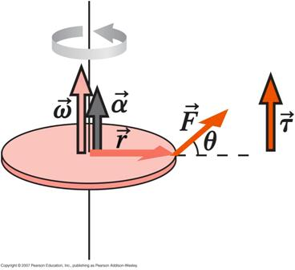
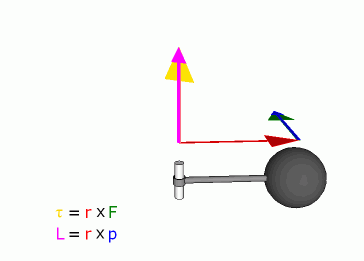

Rotational Dynamics

[A journalist] asked, ‘Mr.
Gandhi, what do you think of modern civilization
?’
And Mr. Gandhi said ‘That would be a good idea’
Mahatma Gandhi – on arriving in
- By analogy with translational motion, in order to discuss rotational dynamics we introduce the concept of torque or rotational force. Force alone is not sufficient since the angular acceleration achieved by a constant force will depend where the force is applied.
- Torque (sometimes called angular force or moment of force) is defined as follows.
where r is the vector from the axis of rotation to the point at which the force is applied, such that r is perpendicular to the axis and theta is the angle between r and F.

Note that the torque, angular velocity and angular acceleration are all directed along the axis of rotation.
The magnitude of
the
torque can be
thought of as the product of either
1. the force and perpendicular distance between the line of action of the force and the turning point (rperpF) or
2. the distance of the turning point from the point of action of the force and the component of the force perpendicular to this line (rFperp)
Units: Newton.metre (N.m)
 Joules
are also
equivalent to N.m, but you should
always
use N.m
for torque, never Joules.
Joules
are also
equivalent to N.m, but you should
always
use N.m
for torque, never Joules.
- Angular Momentum
Defined in a similar manner to torque,
where r and theta are defined in exactly the same way as for torque.
Units: kg.m2/s
- Newton’s 2nd Law
Taking the definition of angular momentum and differentiating with respect to time we can show that,
which is the rotational equivalent of .
Extending this to a system of particles,
where
L is the vector sum of the angular momenta
in the system.

“It’s not that I’m afraid to
die. I just don’t want to be
there
when it happens”
Woody Allen – Death (1975)

Dr. C. L. Davis
Physics Department
University of
email: c.l.davis@louisville.edu